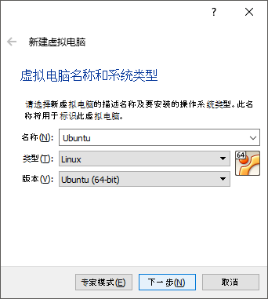
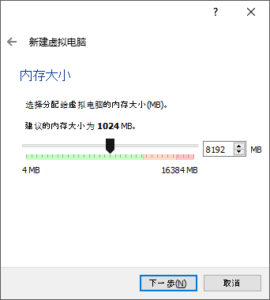
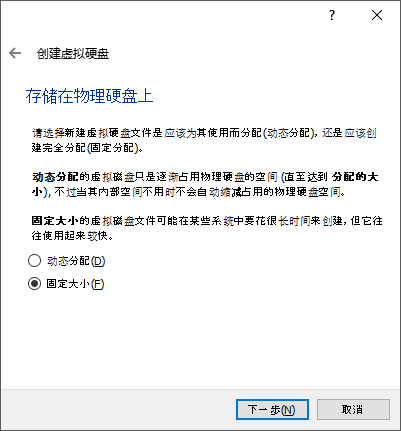
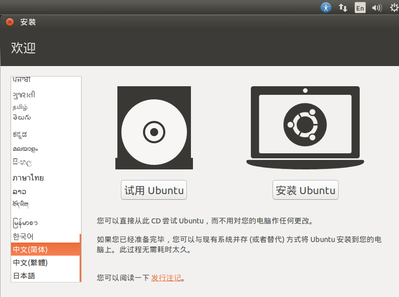
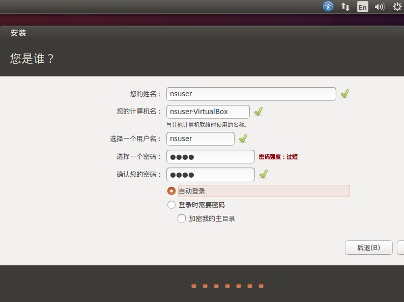
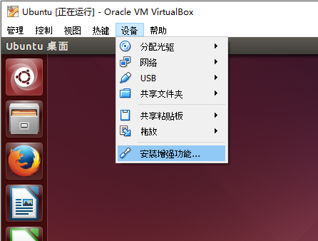

安装 VirtualBox
下载
首先下载VirtualBox安装文件
Windows系统 http://download.virtualbox.org/virtualbox/5.1.6/VirtualBox-5.1.6-110634-Win.exe
还需要下载Ubuntu的镜像文件，ubuntu 12之后的任何版本应该都可以，下面是ubuntu14.04的BT下载链接
http://releases.ubuntu.com/14.04/ubuntu-14.04.5-desktop-amd64.iso.torrent
安装VirtualBox
运行VirtualBox-5.1.6-110634-Win.exe之后一路点next就可以了。

安装以后，如果有需要，可以切换到中文
菜单 File - Preferences

选择Language

创建Ubuntu虚拟机
点击蓝色的新建按钮

给你的ubunutu虚拟机命名

分配内存，取决于要处理的图有多大，先分windows内存的一半吧

创建硬盘，至少8G以上

选固定大小可以加快安装系统的速度

创建完镜像之后，右键点击Ubuntu镜像，进入设置

在存储这栏里，点击光驱的图标，选择ubuntu-14.04.5-desktop-amd64.iso镜像文件

再到系统这栏增加一点处理器，处理器的多少直接决定了合成图像的速度

安装Ubuntu
退出设置后，点击绿色的启动箭头就可以进入Ubunut的安装过程
进入启动界面后，第一步可以先选择安装语言。虽然之后的教程都用中文版Ubuntu，但如果能看懂的建议还是安装英文版。

一路按照默认选项安装就可以
安装类型选择清除整个磁盘并安装Ubuntu，这里清除的是你创建的虚拟硬盘，所以不用担心

创建用户名密码，用户名最好是全英文的，这里我用了nsuser，另外千万别忘了自己设的密码

配置Ubuntu
安装完应该会自动进入Ubuntu系统
如果安装的是14.04，系统可能会提示你要不要升级到16.04，先选择不升级。
VirtualBox顶部菜单 设备-安装增强功能

运行，输入管理员密码
运行结束后，命令行终端显示Press Return to close this window。按下回车关闭窗口就可以了
VirtualBox顶部菜单 设备-共享剪贴板 设置为双向
VirtualBox顶部菜单 设备-拖放 设置为双向
配置完这两项，就可以在windows和ubunutu之间拖放文件和共享剪贴板了
为了保证这些配置都生效，在Ubuntu内右上角点关机按钮，关机 - 重新启动
打开终端 开始安装
点击Ubuntu左上的第一个图标搜索Ubuntu，输入 terminal

打开终端后，就可以进入下一步开始Neural Style的安装了